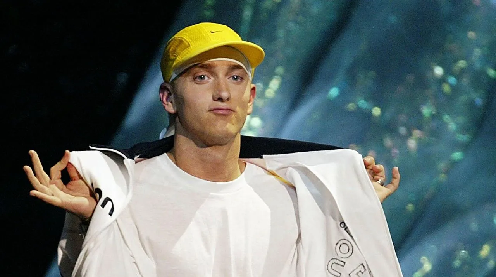

Eminem, nombre artístico de Marshall Bruce Mathers III (St. Joseph, Misuri, 17 de octubre de 1972), es un influyente rapero, productor y actor estadounidense. Criado en un entorno pobre en Detroit, superó una infancia difícil y el rechazo inicial en la escena hip-hop por ser blanco. Saltó a la fama en 1999 con The Slim Shady LP, destacando por su técnica lírica y alter ego controvertido.Este video narra la inspiradora historia de Eminem, desde su infancia difícil hasta su éxito en la música
Eminem hizo su debut en la industria del cine con la película de drama musical 8 Mile (2002), interpretando una versión ficticia de sí mismo, y su canción «Lose Yourself» de su banda sonora ganó el Premio de la Academia a la Mejor Canción Original, convirtiéndolo en el primer artista de hip-hop en ganar el premio. Eminem ha hecho cameos en las películas The Wash (2001), Funny People (2009) y The Interview (2014) y en la serie de televisión Entourage (2010). También ha desarrollado otras empresas, incluida Shady Records, una empresa conjunta con el gerente Paul Rosenberg, que ayudó a lanzar las carreras de artistas como 50 Cent, D12, Obie Trice, entre otros. También ha establecido su propio canal, Shade 45, en Sirius XM Radio. Además de su carrera en solitario, Eminem fue miembro del grupo de hip hop D12. También es conocido por sus colaboraciones con el rapero de Detroit Royce da 5'9"; los dos son conocidos colectivamente como Bad Meets Evil. Eminem se encuentra entre los artistas musicales más vendidos de todos los tiempos, con ventas mundiales estimadas de más de 220 millones de discos. Fue el artista musical más vendido en los Estados Unidos de la década de 2000 y el artista musical masculino más vendido en los Estados Unidos de la década de 2010, tercero en general. Billboard lo nombró «Artista de la década (2000-2009)». Ha tenido diez álbumes número uno en el Billboard 200, que debutaron consecutivamente en el número uno en la lista, convirtiéndolo en el primer artista en lograrlo, y cinco sencillos número uno en el Billboard Hot 100. The Marshall Mathers LP, The Eminem Show, Curtain Call: The Hits (2005), «Lose Yourself», «Love the Way You Lie» y «Not Afraid» han sido certificados Diamante o superior por la Recording Industry Association of America —RIAA—. Rolling Stone lo ha incluido en sus listas de los 100 mejores artistas de todos los tiempos y los 100 mejores compositores de todos los tiempos. Ha ganado numerosos premios, incluidos 15 premios Grammy, ocho American Music Awards, 17 Billboard Music Awards, un premio de la Academia, un Primetime Emmy Award y un MTV Europe Music Global Icon Award. En 2022, Eminem fue incluido en el Salón de la Fama del Rock and Roll.[5